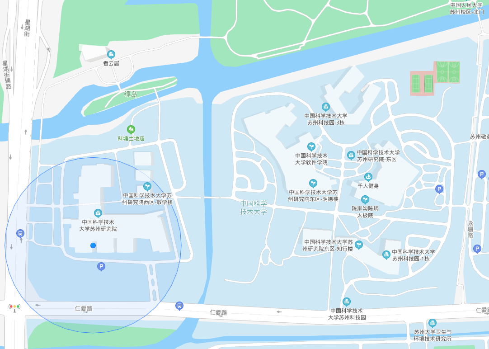

君到姑苏见，人家尽枕河。古宫闲地少，水港小桥多。——《送人游吴》 唐 杜荀鹤Compus EnvironmentMapEast GateSide GateXIETANG Earth TempleGUANGSI GroveGreen IslandCompus EcologyPhoto taken on May 19, 2021 at Suzhou Institute for Advanced Research, USTC by XinRong Lin.NycticoraxLanius schachGarrulax canorusPicapica